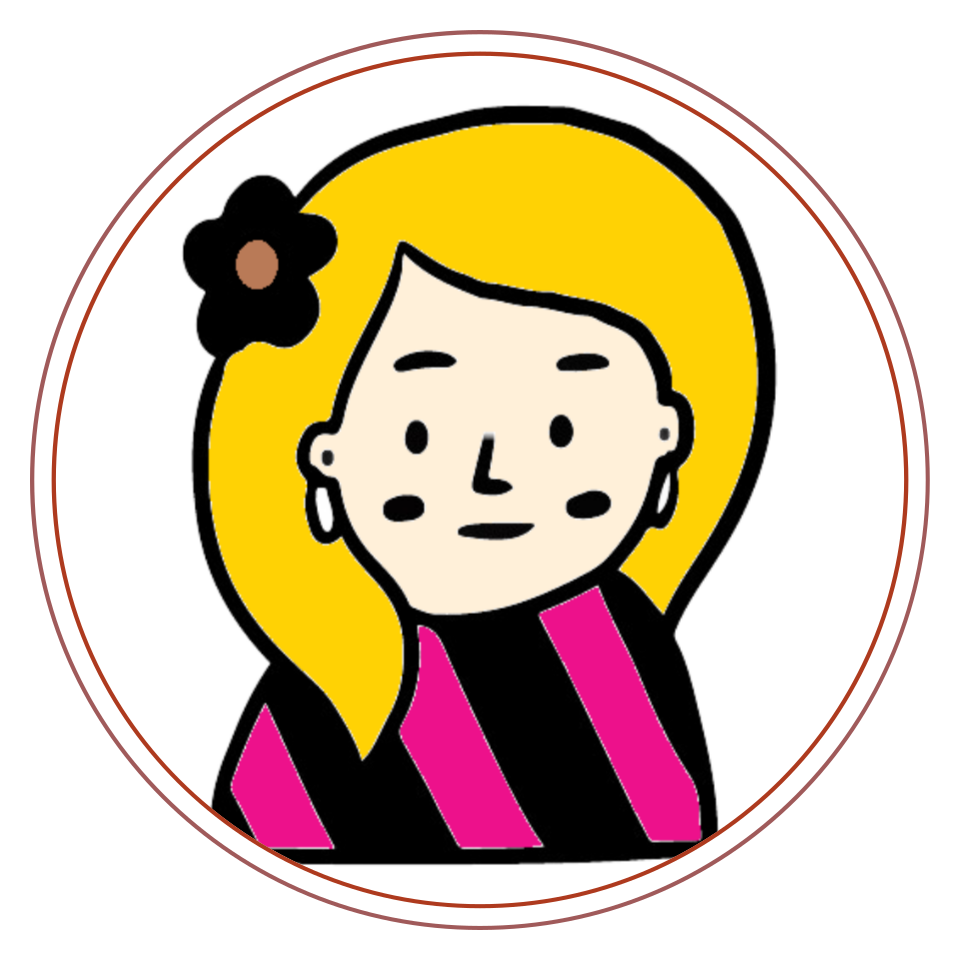

믿음
크리스천은 전도사와 헤어지고 올바른 길로 발걸음을 돌렸다.
크리스천은 그 길을 가는 동안 누구에게도 말을 걸지 않았고, 행여 누군가가 말을 걸어도 절대 답하지 않았다.
그렇게 얼마나 걸었을까, 그는 마침내 좁은 문 앞에 이르렀다.
문 위에는 이렇게 쓰여져 있었다.
"문을 두드리라. 그리하며 너희에게 열릴 것이라."
크리스천은 문 앞에서 긴장된 숨을 한번 내뱉고는 문을 두드리며 말했다.

크리스천
제가 감히 들어가도 되겠습니까?
한 치 보잘 것 없는 죄인이오나 이런 저를 가엾게 여기셔서 문을 열어주신다면 지극히 높으신 그분의 자비하심을 영원토록 찬양하겠습니다.
잠시 후 문이 열리더니 ‘친절’이라는 이름을 가진 여인이 나타났다.

친절
문을 두드린 당신은 누구입니까, 그리고 어떤 일로 오셨습니까?
크리스천
저는 무거운 짐을 진 죄인입니다. 진노를 피하기 위해 멸망의 도시를 떠나 시온산을 향해 가기 위해 이 문을 꼭 지나야 합니다.
저를 위해서 이 문을 열어주시면 안될까요?
크리스천의 이야기를 들은 친절은 고개를 끄덕이며 문을 열어주었다.
열리는 문 안으로 크리스천이 발을 내딛는 순간, 친절이 크리스천을 확 잡아당겨서 문 안으로 그를 끌고 들어왔다.
친절
놀라셨죠?
여기서 조금 떨어진 곳에 바알세불이라는 녀석이 살고 있는데 그 녀석과 부하들이 이 문으로 들어오려는 사람들에게 화살을 쏘는 때가 있더군요. 그래서 그랬습니다.
크리스천은 등골이 오싹해지는 기분을 느끼며 친절에게 말했다.
크리스천
전도사라는 분께서 말씀하시길 제가 이 문 안으로 들어오면 나리께서 제게 할 일을 알려주실 거라 하셨습니다.
친절
이 문은 사실 언제나 당신을 향해 열려있습니다.
인간의 힘으론 절대 이 문을 막을 수 없죠. 그런데 왜 혼자 오셨습니까? 다른 사람들하고 같이 오시진 않았습니까?
크리스천
멸망의 도시에 사는 사람들은 자신들에게 닥칠 일을 아는 사람이 아무도 없었습니다. 떠나는 저와 함께 하려고 하기 보다는 오히려 제 가족들은 돌아오라고 울면서 소리쳤죠.
크리스천
그런데 고집불통과 변덕쟁이라는 두 사람이 따라왔습니다. 고집불통은 저를 설득하려다 실패하니 화를 내며 돌아갔고 변덕쟁이는 저를 따라오다...